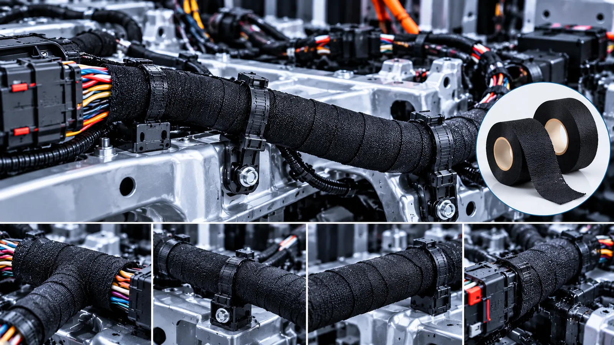

Selection Guide
Wire Harness Tape Types: PVC, Fleece, Fabric, PE, Foam and Foil Compared
Compare six material classes, their typical vehicle locations and the limitations that matter during first-round selection.
Compare all six tape types →